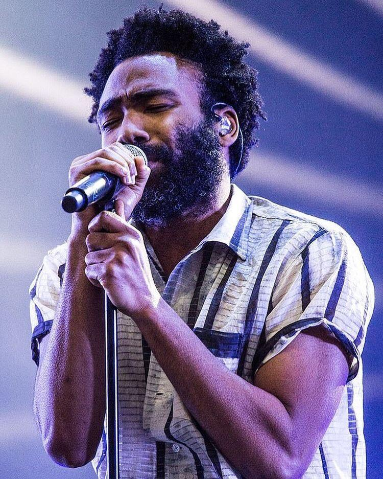

I think we’re all in love with music in one way or the other! We go to concerts and cheer for that wondrous performer on stage and come back home - overjoyed with the entire ordeal but, rarely do we pause to think about what goes behind the scenes of the music industry when it comes to segregating artists and entertainers. Today, let's dig deeper into what are two extremely important factors which thoroughly influence a performer’s temperament on stage and much more essentially, their overall outlook towards the craft!.

If we can be dexterous enough to trace our origins, we find the likes of Rogier van Der Weyden, Martin Schongauer, Hugo Van Der Goes and Hubert van Eyck who found their respective identities as "Artists" during the early ages, be it through paintings or any other respectable medium of channeling their immaculate artistry. Moving forward, the serendipitous beauty of Renaissance art captivates and inspires us along with a plethora of succeeding masters. This was that point in history when art and entertainment were purely segregated, and one could easily differentiate between the two. Entertainment at that point of time was simply the beauty of the romantic Troubadours moving from place to place with those beautiful deliberations about zest which belonged primarily to the knights and heroes. This was the only form of entertainment which was close to any form of artistry. Other modes of entertainment were chess, hammer throwing, wrestling and so much more.
Gradually, with the further progress of civilization, a few fragments of art began to be characterized as a form of entertainment as well, and people gradually stopped differing between the respective forms of entertainment and art. Humanity's thirst for art declined and they wanted only that which would amuse and scintillate them to the point that art became bent upon finding a point of unison with entertainment. Art needed to evolve to keep up with the demands of people and hence, the entire perception of the same changed.
"Artists are those who can evade the verbose" - Haruki Murakami
Artists have the natural instinct to express their unique flair in either their own compositions or their renditions of work composed by another artist. It is much more fulfilling to create something new rather than something that has been done before. As an entertainer, however, broadly speaking, the entire aspect of creating something new for self-fulfilment is not widely appreciated. The job then becomes to invoke a feeling of comfort in the audience’s mind by providing them with something they are already familiar with.
An artist expresses themself via a form of art. Their perception, personal views or intent come into play right here. They try to satisfy their intentions towards the art form they profess and everything else which surrounds that primal cause is perceived to be secondary. The quality of art and the utter satisfaction which they can extract from the same is the most important thing that comes into the mind of a true artist.
Before expressing about entertainers, I would love to quote a song by the evergreen Billy Joel - "The Entertainers"
"I am the entertainer and I know just where I stand another serenader and another long-haired band today I am your champion I may have won your hearts but I know the game, you'll forget my name and I won't be here in another year if I don't stay on the charts"
The above words speak for the doer. Entertainers aren't monophonic creatures and they have this abhorrence that they can be lost if they are unable to satisfy their audience with content which entices every second. The perception of Billie becomes very pragmatic as a look into the development of a pop star, covering the unsavoury part of fame, as well as excitement. This song proved to be a message from Billie indicating that he knows exactly how it works, and exactly how he might end up. Entertainers cannot stay put on one pedestal stating that "Yes, I can preach my art the way I like"; they need to excogitate with due time. The artistic evolution needs to be beseeching and amusing. That's exactly where entertainment comes from.
I have never been an advocate of definitions or complicated deliberations about something which can be easily elucidated in a jiffy. An entertainer, in my words, is someone worthy of creating amusement. Entertain comes from the juxtaposition of French entre which comes from Latin inter - both words meaning 'together, or among', and Latin tenere, which means 'to hold'. If any element or entity garners any form of familiarity, it will be evident that a crowd will gather around it and that particular entity will keep an assemblage of people together if it can enthral them.
Now as stated in previous paragraphs, as the years have passed by, artists and entertainers have merged into the same entity. Very few can identify as either a true artist or a true entertainer. Nowadays, every entertainer has the freedom and support to express themselves and their individualism through entertainment, which can be considered as an aspect of art. Similarly, artists often identify themselves as entertainers as part of their act. They might take certain steps to satisfy or amuse the audience but it stems from their primary instinct to create art. In our world it is almost impossible to live as just a true artist because the harsh truth is as long as one is not pushing themselves to innovate and satisfy their audience, they will be forgotten. Art and Entertainment are different identities, but a modern performer needs to know how to use both to their advantage.
“Unless you're willing to look a little foolish, forget the possibility of becoming great.” ― Cher, If I Could Turn Back Time